×

Bali'nin En Güzel Kafe ve Restoranları
Eğer bu yazıyı açtıysanız geçmiş olsun... Çünkü birazdan Bali'de "Buraya da gidelim, bunu da deneyelim." diye diye listenizi uzatacağım. Benim favori mekanlarımın hepsi burada.
1 La Brisa
2 Finns Beach Club
3 The Lawn Beach Club
4 Jungle Fish
5 Savaya Beach Club
Bali'de yeme içme konusu gerçekten ayrı bir dünya. Küçük aile işletmesi warunglardan şık
restoranlara, vegan kafelerden üçüncü nesil kahvecilere kadar seçenek o kadar fazla ki birkaç
hafta kalsanız bile listenizin sonuna gelmek pek mümkün değil. Üstelik Bali'de yalnızca
Endonezya yemekleri yok. Dünyanın farklı mutfaklarından çok iyi örneklerle de karşılaşabiliyorsunuz.
Yine de Bali'ye kadar gelmişken yerel yemeklere mutlaka yer açın. Nereden başlayacağınıza karar
veremiyorsanız farklı yemeklerin küçük porsiyonlarla aynı tabakta bulunduğu
nasi campur Bali güzel bir başlangıç. Baharatlarla ağır ağır
pişirilen ayam betutu, kıyılmış etin veya balığın çubuğun etrafına sarılarak
pişirildiği sate lilit ve Bali'ye özgü acılı sambal matah
da mutlaka denemenizi önerdiğim tatlar arasında. Daha tanıdık bir şey ararsanız
nasi goreng (kızarmış pilav) ve mie goreng (kızarmış noodle)
neredeyse her yerde karşınıza çıkıyor.
Bali'de musluk suyu içilmiyor. Kapalı şişe su kullanın ve buz konusunda
emin olmadığınız yerlerde sipariş verirken sorun. Warung seçerken hareketli, yemeklerin sık
yenilendiği yerler genellikle daha iyi bir seçim oluyor.
Endonezya genelinde birçok restoran ve otelde hesaba servis ücreti ekleniyor.
Bali'nin turistik bölgelerinde bu uygulamayla sık sık karşılaşacaksınız. Ücret toplam hesabın
yüzdesi üzerinden hesaplandığı için sipariş tutarı arttıkça ödediğiniz miktar da artıyor.
Küçük warunglarda ise çoğu zaman servis ücreti bulunmuyor.
Bu küçük notları da aradan çıkardığımıza göre şimdi gelelim Bali'de deneyip gerçekten beğendiğim
mekanlara. Baştan söyleyeyim, liste ilerledikçe acıkmanız oldukça olası. 😊
1. Zest, Ubud
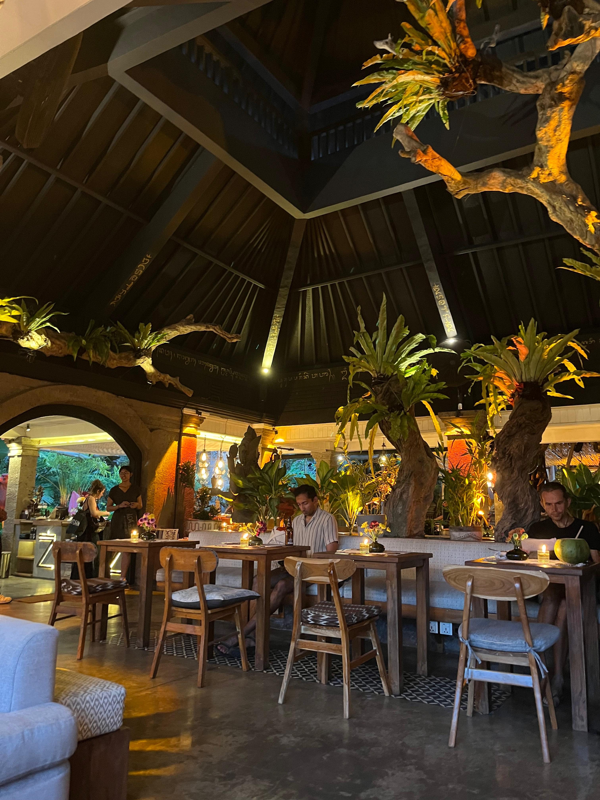
Ubud'da en sevdiğim mekanlardan biri Zest oldu. Menüsü tamamen vegan ama burayı sevmek için vegan olmanıza hiç gerek yok. Menü o kadar geniş ve tabaklar o kadar güzel görünüyor ki sipariş vermeden önce bir süre kararsız kalmanız çok normal.
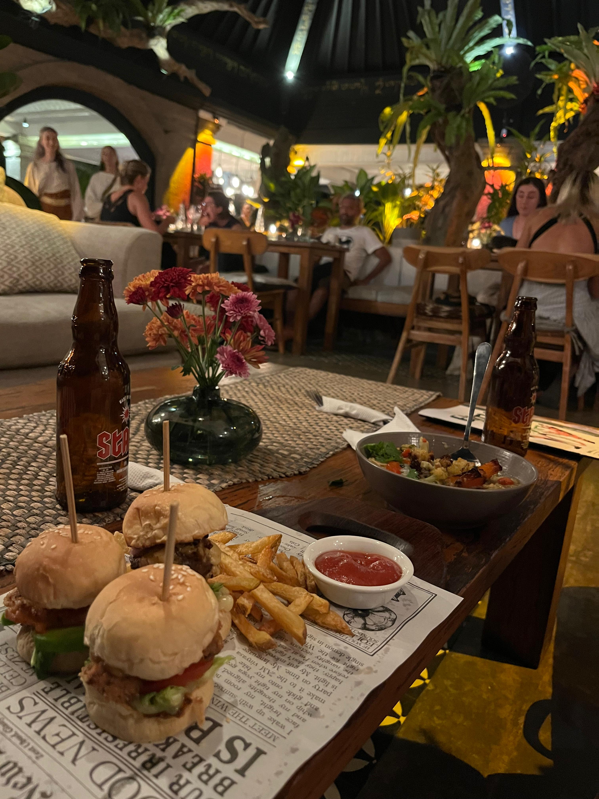
Yemeklerin hepsi rengarenk, doyurucu ve gerçekten lezzetli. Hiçbiri yalnızca
sağlıklı olsun diye lezzetten kısmış gibi değil. Sunumların özenli olması da insanın masaya
gelen her şeyi denemek istemesine neden oluyor.
Zest'in en güzel taraflarından biri de ortamı. Yemyeşil ağaçların arasında, oldukça rahat ve
insanı acele ettirmeyen bir havası var. Yemeğiniz bittikten sonra hemen kalkmak yerine bir içecek
daha söyleyip biraz daha oturmak istiyorsunuz. Ben buranın yemeğini de ortamını da çok sevdim.
2. This is Bali, Ubud

Atmosferi gerçekten çok güzel ve enerjisi oldukça canlı bir yer. İçeride epey fazla çalışan var ve
güzel bir sistem kurmuşlar; masanıza bir garson atanıyor ve yemeğiniz boyunca o kişi sizinle
birebir ilgileniyor. Bu da hem hizmeti daha düzenli hem de daha kişisel hale getiriyor.
Menü konusunda da yardımcı oluyorlar. Ne seçeceğinize karar veremediğinizde yemekleri
tek tek anlatıp damak tadınıza göre yönlendiriyorlar. Benimle ilgilenen Sulashi'nin Türkçe
bilmesi de güzel bir sürpriz oldu. Türk mutfağını bildiği için bana oldukça yerinde öneriler
yaptı.
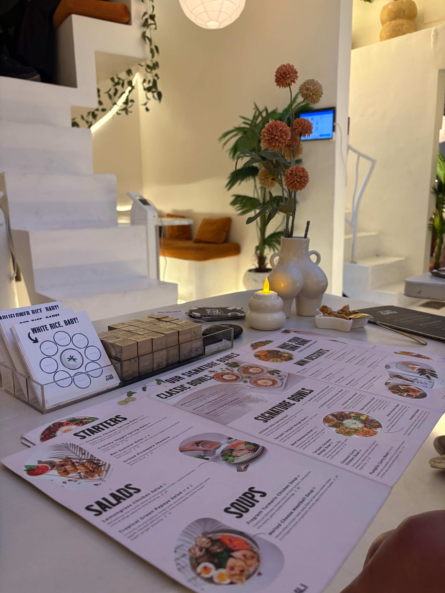
Buranın en sevdiğim tarafı ise yemek sipariş etme şekliydi. Önünüze damgalı küçük bir menü getiriliyor ve tabağınızı adım adım kendiniz oluşturuyorsunuz. Pilavdan sebzelere, sostan baharatlara kadar istediğiniz seçenekleri işaretleyip garsona veriyorsunuz. Bir süre sonra tamamen kendi seçimlerinizden oluşan tabak masaya geliyor.Hem eğlenceli hem de ne yediğinizi tamamen kontrol edebildiğiniz farklı bir sistem. Özellikle Endonezya yemeklerine çok aşina değilseniz, birkaç farklı lezzeti aynı tabakta denemek için güzel bir fırsat.
Bir de önemli bir not: Kesinlikle rezervasyon şart. Burası yoldan geçerken uğrayayım, bir oturayım diyebileceğiniz bir yer değil. Rezervasyon için This Is Bali'nin web sitesini ya da Instagram hesabını kullanabilirsiniz.
3. Locavore NXT, Ubud
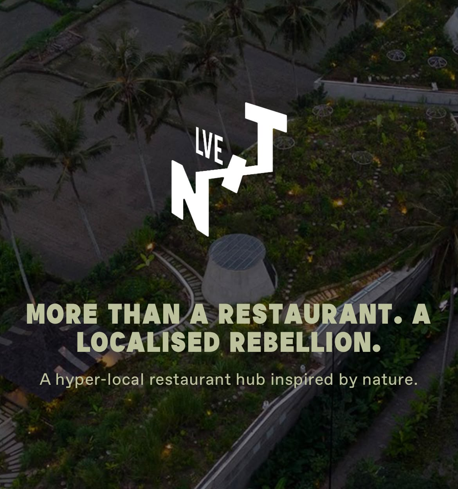
Bu listedeki diğer mekanlardan farklı olarak Locavore NXT'ye gidemedim. Yer
bulamayınca biraz içimde kaldı ama yine de buradan bahsetmeden geçmek istemedim. Çünkü burası
yalnızca yemek yenilen şık bir restoran değil, baştan sona düşünülmüş farklı bir deneyim.
Michelin yıldızlı restoranlarda deneyim kazanmış şefler
Eelke Plasmeijer ve Ray Adriansyah tarafından kurulan bu restoran,
bugün Asya'nın en iyi
restoranları arasında gösteriliyor ve dünyanın dört bir yanından gastronomi tutkunlarını Ubud'a
çekiyor.
Locavore NXT'nin en etkileyici taraflarından biri ise sürdürülebilirlik anlayışı. Menünün büyük
bölümü kendi çatı bahçelerinde yetiştirdikleri ürünlerden, mantar laboratuvarlarından, fermantasyon
mutfağından ve yerel üreticilerden gelen malzemelerle hazırlanıyor. Restoranda mümkün olduğunca her
şey yeniden değerlendiriliyor; doğaya saygılı ve neredeyse kapalı döngü bir sistemle çalışıyorlar.
Yani burada sadece yemek yemiyor, mutfağın geleceğine dair farklı bir bakış açısını da
deneyimliyorsunuz.
Bali'ye gitmeden önce rezervasyon yapmaya çalıştım ama ne yazık ki yer bulamadım.
Rezervasyonlar çoğu zaman haftalar, hatta aylar öncesinden tükeniyor. Daha sonra iptal
edilen bir rezervasyon yakalarım diye birkaç kez daha kontrol ettim, yine olmadı. Burayı
listenize aldıysanız seyahat tarihiniz belli olur olmaz
Locavore NXT'nin web sitesi
üzerinden yerinizi ayırın. Son dakikaya bırakılacak bir restoran değil.
4. Jungle Fish, Ubud
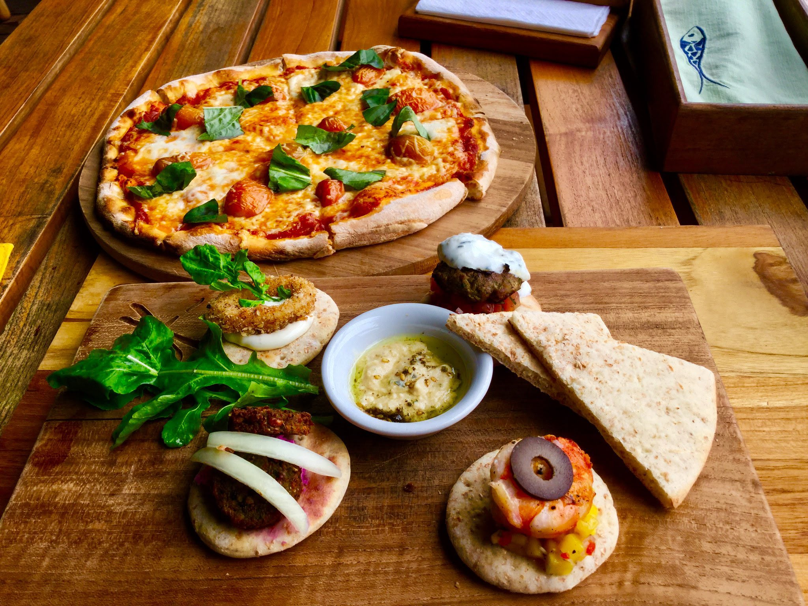
Jungle Fish'e ilk olarak ormanın ortasındaki sonsuzluk havuzu ve manzarası için
gittim. Sonrasında yemekleri de beklediğimden çok daha iyi çıktı ve burayı yeme içme listesine
eklemeden geçmek istemedim.
Menüde havuz başında yiyebileceğiniz hafif atıştırmalıklardan ana yemeklere, tatlılardan
kokteyllere kadar birçok seçenek var. Yemeklerin hepsi birbirinden yaratıcı ve servis
de hızlı. Sunumlar özenli. Yalnızca güzel görünsün diye hazırlanmış tabaklar değil,
lezzetleri de harika.
Kokteyller için de aynısını söyleyebilirim. Masaya geldiklerinde önce fotoğraflarını çekmek
istiyorsunuz ama görüntülerinin yanında tatları da oldukça başarılı. Havuz başında uzun bir gün
geçirecekseniz burada yemek konusunda hayal kırıklığı yaşamazsınız.
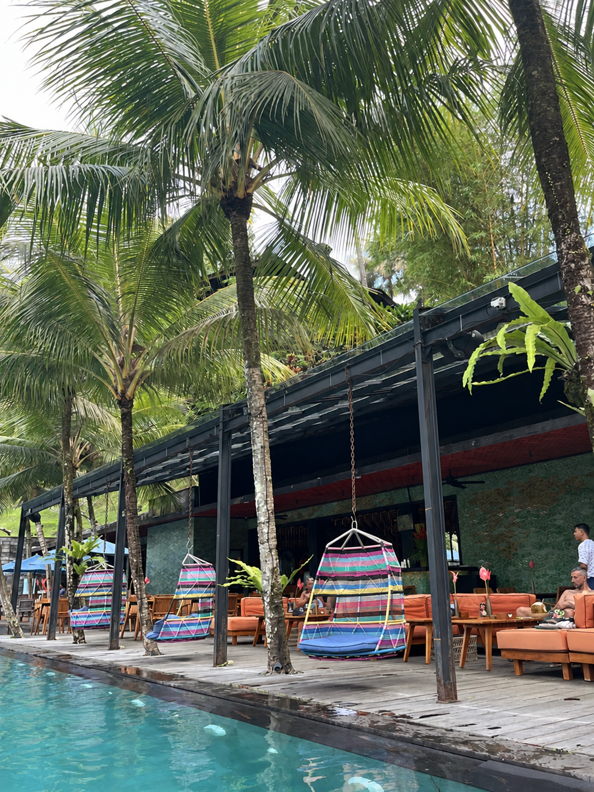
Jungle Fish'in havuzu, ortamı ve gitmeden önce bilmeniz gereken diğer ayrıntılar için Bali'nin En İyi Beach Club'ları yazısına da göz atabilirsiniz.
5. Tukies Coconut Shop
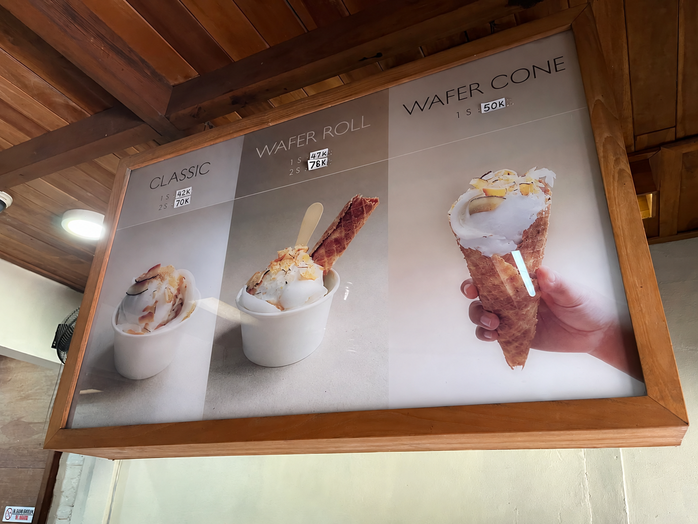
Bir yer düşünün, dondurmasından külahına, üzerine serpiştirilen çıtır tanelere kadar her şey
Hindistan cevizinden. Brownie’leri ve kekleri de en az dondurması kadar güzel. Kısacası, burada
Hindistan cevizine doyuyorsunuz. Bali’nin sıcak günlerinde serinlemek için harika bir mola noktası.
İçerinin konsepti de ayrı hoş.
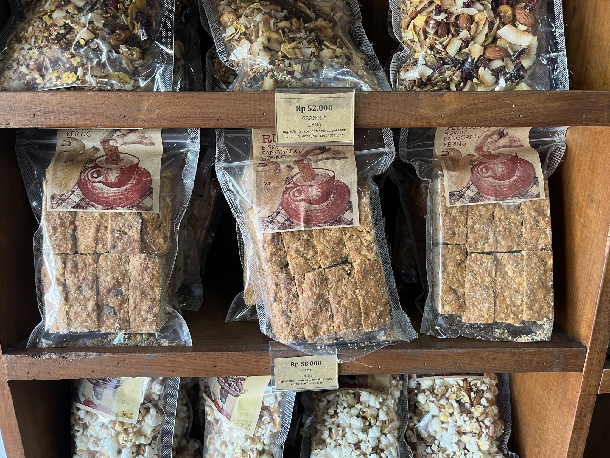
Çıkarken satılan Hindistan cevizli küçük atıştırmalıklara da göz atabilirsiniz. Bali’ye yolunuz düşerse Tukies Coconut Shop’a uğramadan geçmeyin derim.6. Golden Monkey, Ubud
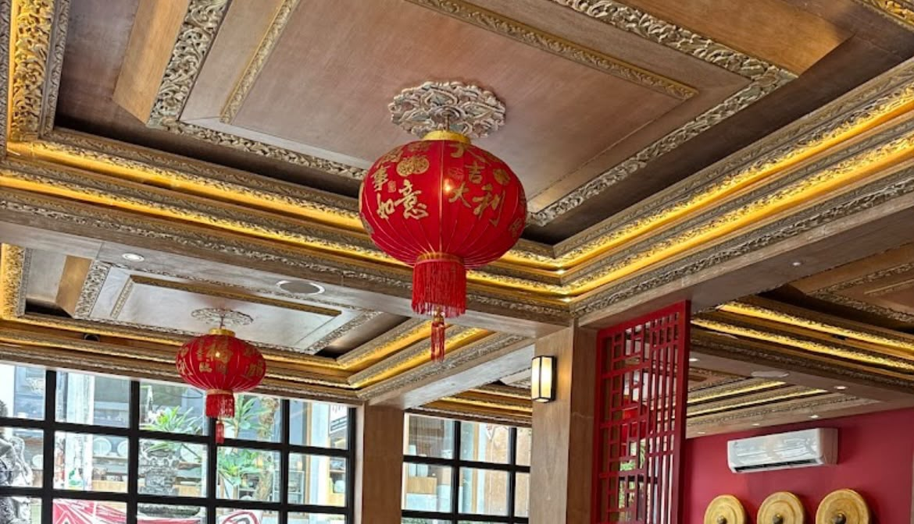
Birkaç gün yerel yemekleri denedikten sonra canınız noodle ya da dim sum çekerse
Golden Monkey tam o akşamlık bir yer. Ubud'da Çin mutfağı yemek isteyenlerin
uğrayabileceği bu restoran, özellikle dim sum çeşitleriyle öne çıkıyor.
Ben burada farklı noodle çeşitleri, dim sum'lar ve birkaç ana yemek denedim. Masaya gelenlerin
hepsi oldukça lezzetliydi ama benim favorim dim sum'lar oldu.
Mekan şık görünmesine rağmen hiç kasıntı bir havası yok. Rahatça oturup uzun bir akşam yemeği
yiyebileceğiniz, Bali'de farklı bir mutfağa geçmek istediğinizde aklınıza gelebilecek güzel
yerlerden biri.
7. YogaBarn
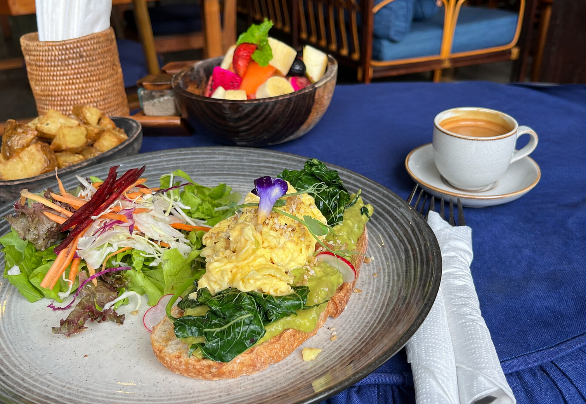
YogaBarn'ın mutfağı, Bali'de en sevdiğimiz mutfaklardan biri oldu. Tamamen sağlıklı ve
vegan ağırlıklı olmasına rağmen menü o kadar geniş ki kahvaltıdan akşam
yemeğine kadar her öğünde gönül rahatlığıyla tercih edebilirsiniz.
Ubud'da kaldığım süre boyunca menüden birçok şey deneme fırsatım oldu. Kahvaltı tabakları,
smoothie'ler, taze sıkılmış meyve suları, bowl'lar, çorbalar ve wrap'ler... Denediklerimin hepsi
çok lezzetliydi. Malzemeler taze, porsiyonlar da oldukça doyurucu.
Menüye, derslere, etkinliklere ve konaklama seçeneklerine dair tüm ayrıntıları
The Yoga Barn Ubud Rehberi
yazısında anlattım. Menü fotoğraflarını da yazının içinde bulabilirsiniz.
8. The Elephant Restaurant Bar, Ubud
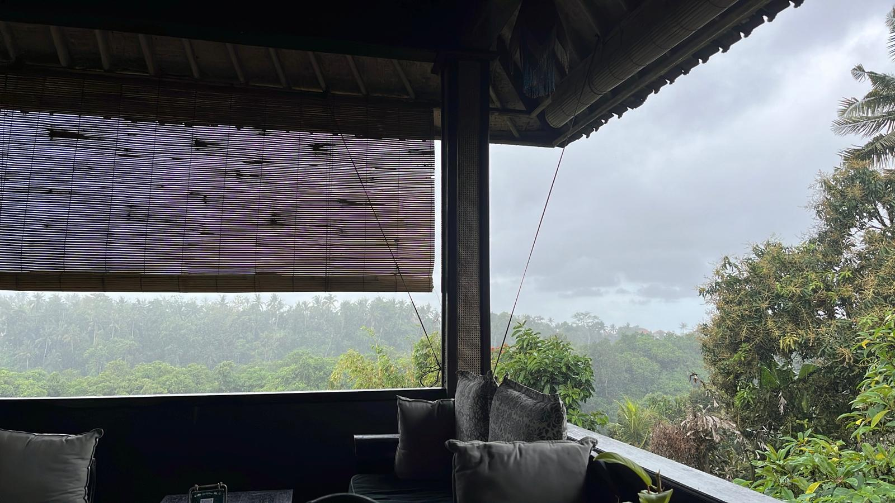
The Elephant Restaurant & Bar, Ubud’da özellikle manzarasıyla öne çıkan, oldukça keyifli bir mekan.
Yemyeşil orman ve vadi manzarasına karşı oturup yemek yemek buranın en güzel tarafı.
Burası aynı zamanda Campuhan Ridge Walk’a da oldukça yakın. Burada güzel bir plan yapabilirsiniz;
ya kahvaltınızı burada yapıp yürüyüşe buradan başlayabilirsiniz ya da Campuhan yürüyüşünü
tamamladıktan sonra
burada mola verip yorgunluk atabilirsiniz.
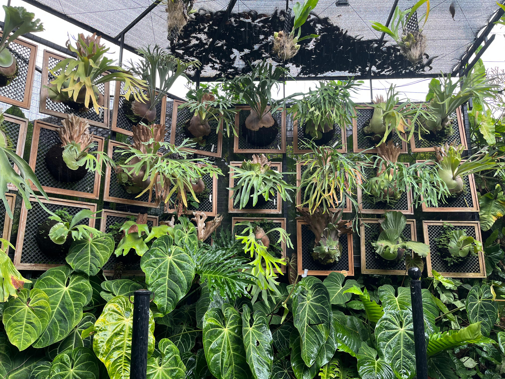
Kahvaltı tabakları çok başarılı. Özellikle kendi yaptıkları muhteşem ekmekleri var,
bunu ayrıca
belirtmek lazım. Bahçesi de epey keyifli; yemyeşil ortamı sayesinde saatlerce oturup vakit geçirmek
isteyeceğiniz
bir atmosferi var.
Eğer Campuhan yürüyüş yolunu daha detaylı okumak isterseniz
Campuhan Ridge Walk
yazıma göz atabilirsiniz.
9. Bee Cafe, Ubud
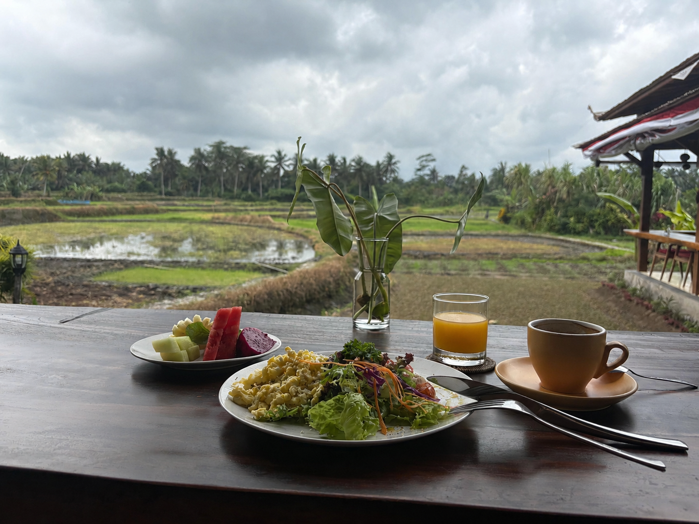
Bee Cafe, özellikle kahvaltı ve brunch için güzel seçenekleri olan ferah bir
mekân. Menüde smoothie bowl'lardan kahvaltı tabaklarına, sandviçlerden kahvelere kadar birçok
seçenek bulunuyor.
Ben burayı en çok sakinliği için sevdim. Karşınızda uzanan yemyeşil pirinç tarlalarını izleyerek
yemeğinizi yiyebiliyorsunuz. Ortam oldukça sessiz olduğu için kitabınızı ya da bilgisayarınızı
yanınıza alıp burada saatlerce rahatça oturabilirsiniz.
Portakal suyuyla ilgili küçük bir not da bırakayım. Ben taze sıkılmış olduğunu düşünerek sipariş
verdim ama değildi. Taze sıkılmış meyve suyu istiyorsanız sipariş vermeden önce özellikle sorun.
10. Warung Citta Ovest, Ubud
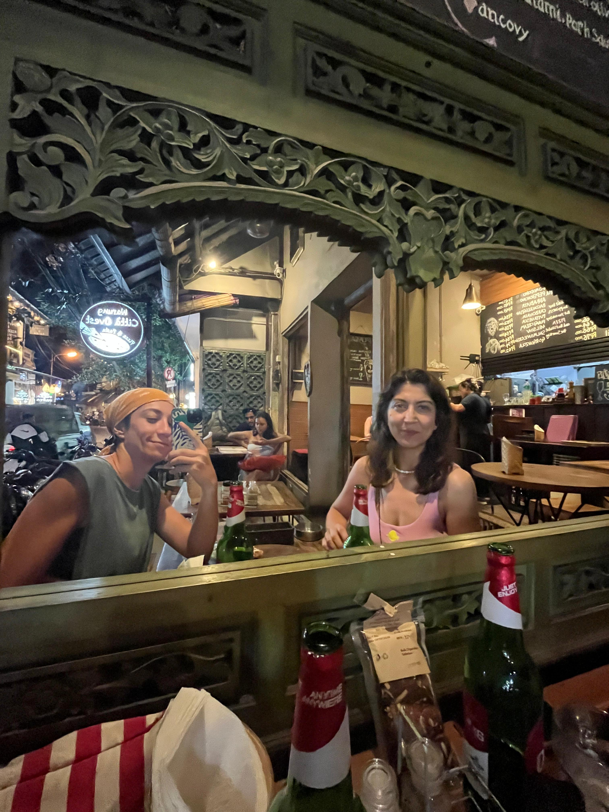
Endonezya'da warung küçük ve yerel işletmeler için kullanılan bir kelime.
Büyük restoranlardan farklı olarak daha rahat, samimi ve ev yemeği hissi veren yerler
bunlar.
Warung Citta Ovest de bu rahat ortamı koruyor ama menüde asıl öne çıkan şey
pizzaları. Taş fırından çıkan pizzalar gerçekten çok iddialı. İnce hamuru, güzel pişmiş
kenarları ve bol malzemesiyle Bali'de yediğim en iyi pizzalardan biri.
Yerel ve samimi bir ortamda iyi bir pizza yemek isterseniz kesinlikle değerlendirin.
11. You and Mie, Ubud

Bir diğer küçük warung olan You and Mie, Ubud'da noodle yemek isteyenler için
oldukça güzel bir seçenek. Mekan küçük ve sade. İçeri girdiğiniz anda buranın asıl işinin taze
noodle hazırlamak olduğu anlaşılıyor.
Menüde farklı noodle çeşitleri bulunuyor ve yemeğinizi kendi damak zevkinize göre
şekillendirebiliyorsunuz. Denediğim noodle oldukça doyurucuydu. Sosu ağır değildi, malzemelerin
tadını da gayet iyi alabildim.
Uzun uzun oturulan şık bir akşam yemeğinden çok, gün içinde hızlı ve lezzetli bir şeyler yemek
istediğinizde uğrayabileceğiniz rahat bir yer.
12. Avocado Factory, Canggu
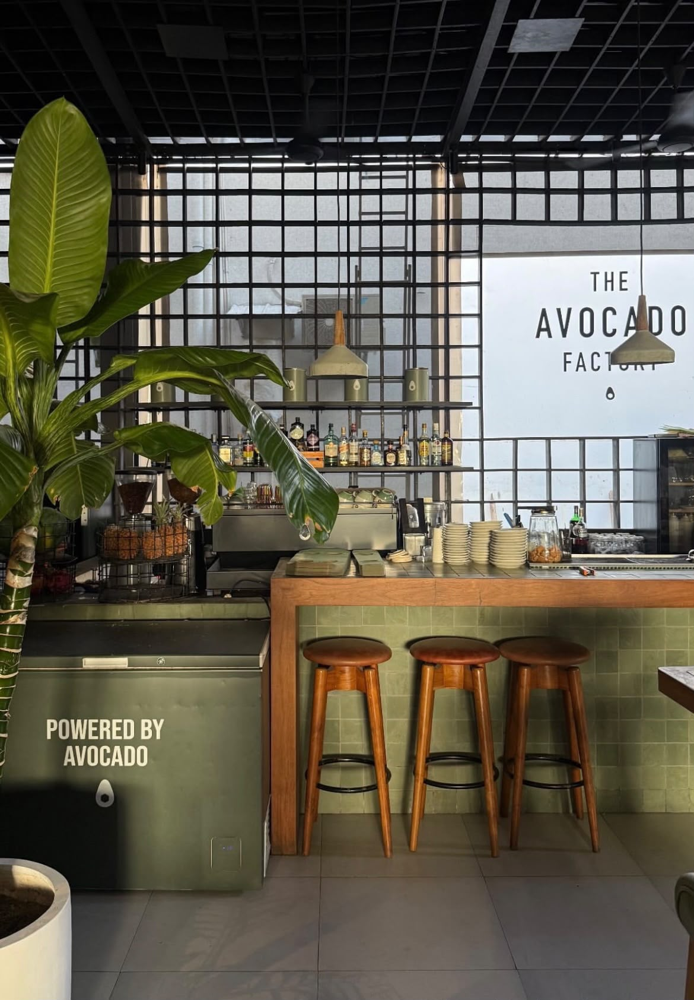
Geldik Canggu bölgesine. Canggu'nun en keyifli mekanlarından biri: Avocado Factory 🥑 Daha adımınızı atar atmaz avokado konusunda ne kadar ciddi olduklarını anlıyorsunuz. 😄 Menünün neredeyse tamamında avokado var. Kahvaltı tabakları, burgerler, tostlar, bowl'lar, salatalar, tatlılar ve hatta içecekler...
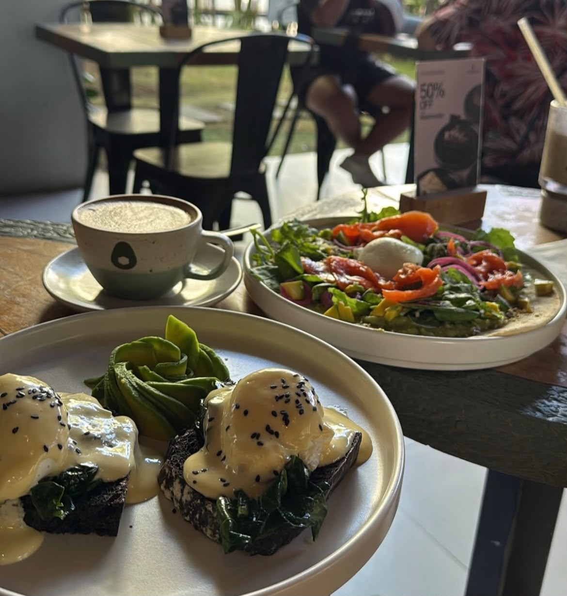
Ben burada özellikle kahvaltıyı çok sevdim. Tabaklar hem rengarenk hem de gerçekten çok doyurucu.
Taze sıkılmış meyve suları ve smoothie'ler de en az yemekler kadar başarılıydı. Eğer avokado
seviyorsanız buradan büyük ihtimalle çok mutlu ayrılırsınız. Canggu'daysanız kahvaltı ya da brunch
için mutlaka listenize ekleyin.
Avocado Factory haftanın her günü 07.00-23.00 saatleri arasında açık. Mutfakta
son sipariş ise 22.30'da alınıyor.
13. Mason, Canggu
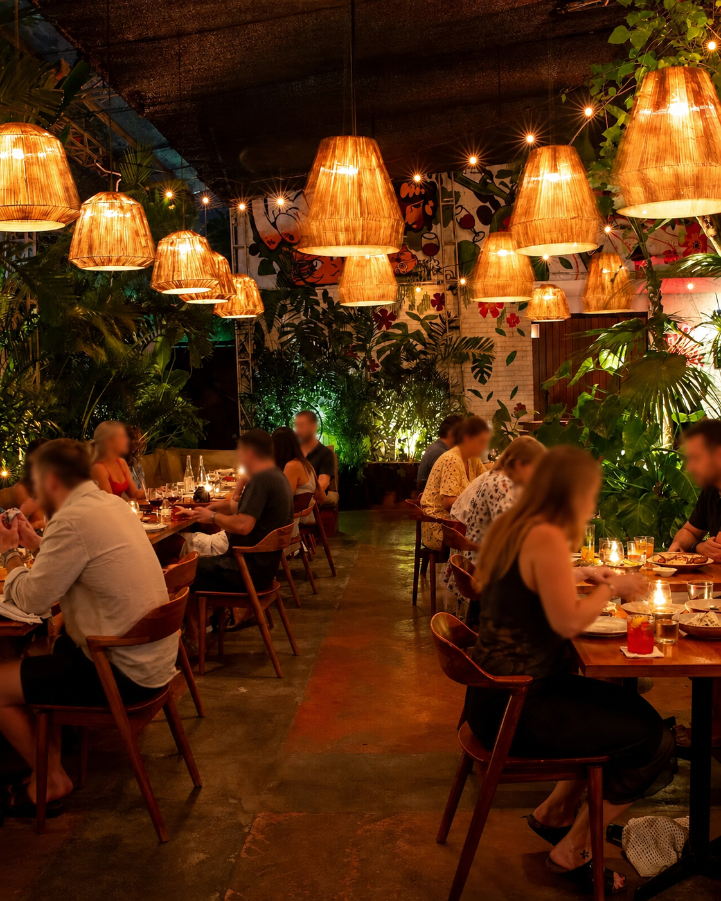
Canggu'da güzel ve şık bir akşam yemeği yemek istiyorsanız Mason'ı listenize
eklemelisiniz. Burası odun ateşinde hazırlanan yemekleri kadar tasarımıyla da öne çıkıyor.
Taş, ahşap ve sıcak renklerin kullanıldığı dekorasyonuyla çok samimi bir ortama sahip.
Akşam ışıkları yandığında ortam çok daha güzel bir hal alıyor.
Menüde kaliteli etler, taze deniz ürünleri ve paylaşmalık tabaklar bulunuyor. Yemekleri çok lezzetli
ve yaratıcı.
Odun ateşinin verdiği lezzet de birçok tabakta kendini belli ediyor.
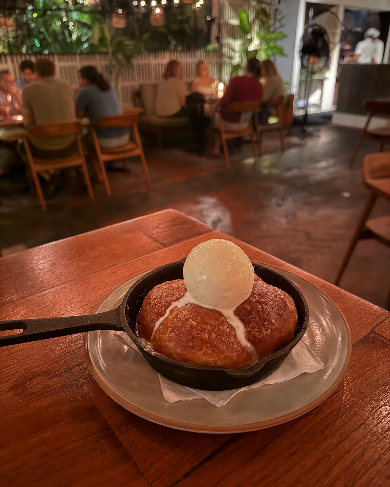
Mason gün içinde açık olsa da bence buraya akşam gidilmeli. Canggu'nun merkezinde, canlı ama rahat bir ortamda uzun uzun yemek yiyebileceğiniz güzel bir yer. Genellikle yoğun olduğu için gitmeden önce Mason'ın web sitesi üzerinden rezervasyon yaptırmanızı tavsiye ederim.14. Zai Cafe
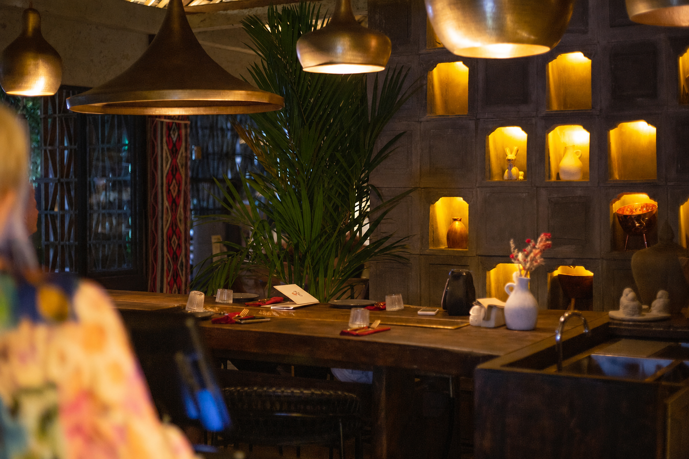
Zai Cafe'de yaratıcılık yalnızca yemeklerde değil, mekanın her köşesinde kendini
gösteriyor. Ben en çok Bali motifleriyle süslenmiş duvarlarını sevdim. Bu motifler
burayı Canggu'daki diğer kafelerden ayırıyor. Mutfakta da harika bir yaratıcılık var ve
alışık olduğunuz malzemeler çok farklı şekillerde karşınıza çıkıyor. Ayrıca burayı sadece
akşam yemeği için düşünmeyin. Kahvaltıları da çok güzel. Kısacası Zai Cafe, günün her öğününde
şans verebileceğiniz kafelerden biri.
Çıtır tempeh ve Bali sambalı gibi lezzetlerle hafif bir başlangıç yapıp deniz ürünleri, et
yemekleri ve taze vejetaryen seçeneklerle devam edebilirsiniz. Kahveleri çok güzel, tropikal
meyvelerle hazırladıkları el yapımı kokteyller de çok
başarılı. Tatlıları da harika, bu yüzden yemeğinizi yerken tatlıya yer kaldığından emin olun.
Zai Cafe, pazar ile perşembe günleri 08.00-23.00, cuma ve cumartesi
günleri 08.00-00.00 saatleri arasında açık. Güncel menüye bakmak ve rezervasyon
yapmak için
Zai Cafe'nin internet sitesine
göz atabilirsiniz.
15. Desa Kitsuné, Canggu
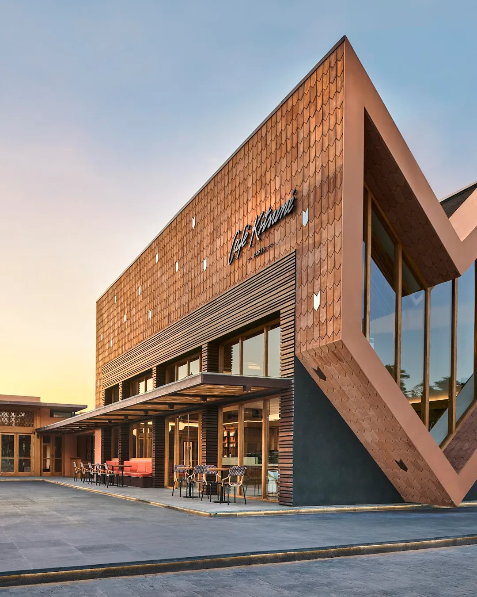
Desa Kitsuné, Bali'nin ortasında tam bir Paris havasına sahip. Burası sadece bir gece kulübü değil. İçinde Café Kitsuné, Ina Ré restoranı ve Maison Kitsuné mağazası da bulunuyor.
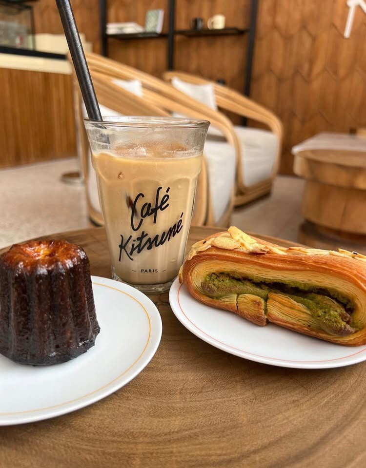
Gündüz kahvenizi içip tatlı yiyebileceğiniz sakin bir yerken akşam saatlerinde bambaşka bir eğlence mekanına dönüşüyor.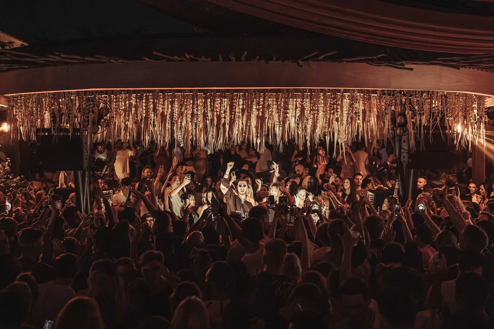
Özellikle salı ve cuma günleri özel etkinlikler düzenleniyor. DJ performansları başladığında burası bambaşka bir yer oluyor. Bir de ortada yalnızca görüntü amaçlı yapılmış, içine girilmeyen bir havuz bulunuyor. Evet, biraz garip😄 Mekan oldukça şık ve kaliteli ama dürüst olmak gerekirse biraz mesafeli bir havası da var. Kıyafet kurallarını fazlasıyla ciddiye alıyorlar. Özellikle terlikle gitmeyi aklınızdan bile geçirmeyin, yoksa giriş sırasını boşuna beklemiş olursunuz.Etkinlikler genellikle saat 20.00'de başlıyor ve giriş için 21 yaş sınırı var. Mekan, etkinlikler ve bilet fiyatları için gitmeden önce Desa Kitsuné web sitesini inceleyebilirsiniz.
16. Luigi’s Hot Pizza, Canggu
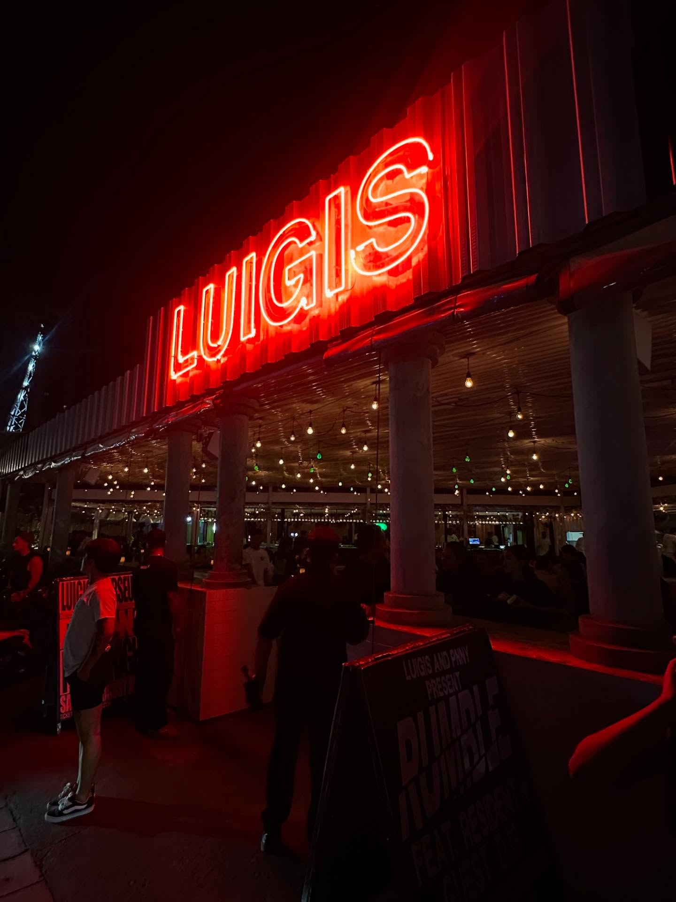
Luigi’s Hot Pizza, Canggu'da pizza, müzik ve eğlenceyi aynı yerde bulabileceğiniz oldukça hareketli bir mekan. Buranın en güzel tarafı ise akşamın nasıl ilerleyeceğini pek kestirememeniz. Luigi’s’e pizza yemeye gidiyorsunuz ama kendinizi bir anda dans ederken buluyorsunuz.
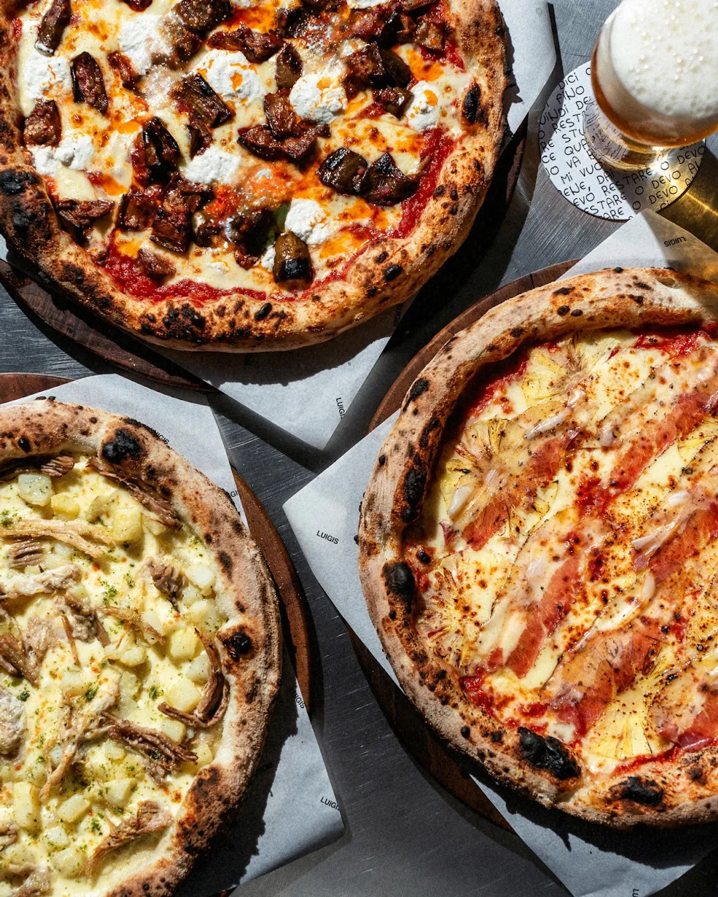
Taş fırınında pişen pizzaları buranın asıl yıldızı. Menüde taze hazırlanan makarnalar, burgerler, aperatifler ve tatlılar da var. Büyük ortak masaları ve geniş bahçesiyle rahat bir ortamı var. Arkadaşlarla yemek yemek, birkaç kokteyl içmek ve geceye burada devam etmek için güzel bir seçim olabilir.Pazartesi günleri düzenlenen Metto Monday, çarşamba günleri Pasta & Vino, cuma günleri ise DJ performansları var. Luigi’s her gün 16.00'dan gece geç saatlere kadar açık. Özellikle etkinlik akşamlarında yer bulmak zor olabildiği için önceden rezervasyon yapabilirsiniz.
Bu yazıda anlattıklarım Bali'de keşfedebileceğiniz mekanlardan yalnızca birkaçı arkadaşlar. Dediğim gibi; ada, yeme içme konusunda öyle zengin ki birkaç hafta kalsanız bile listenin sonuna gelmek pek mümkün değil. Yeni yerler keşfettikçe ben de bu yazıyı güncellemeye devam edeceğim.
Bali planınızı hazırlarken aklınıza takılan bir şey olursa yorumlara yazabilirsiniz. Gitmeyi düşündüğünüz mekanları, kararsız kaldığınız yerleri ya da kendi Bali listenizi benimle paylaşın. Elimden geldiğince yardımcı olmak ve sizin keşiflerinizi de duymak isterim!
Yorum Yaz
E-posta adresiniz yayımlanmayacaktır. Gerekli alanlar * ile işaretlenmiştir.